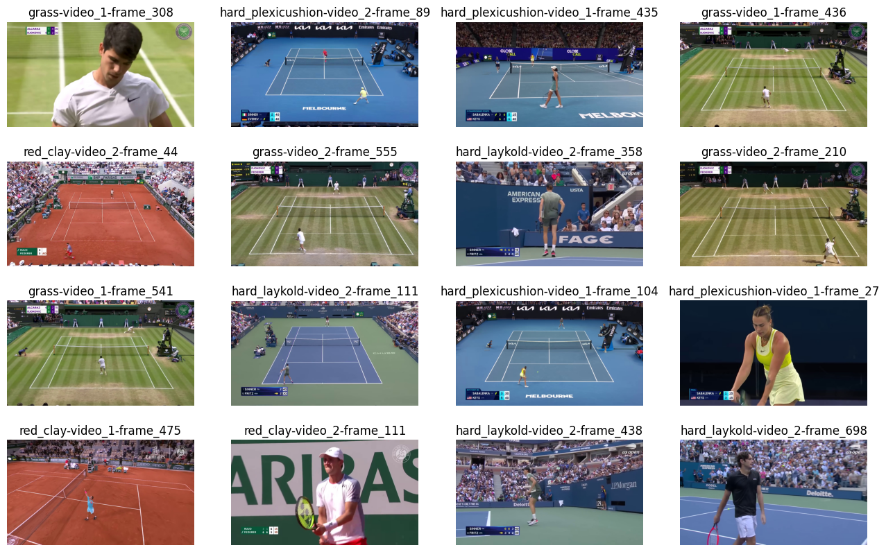
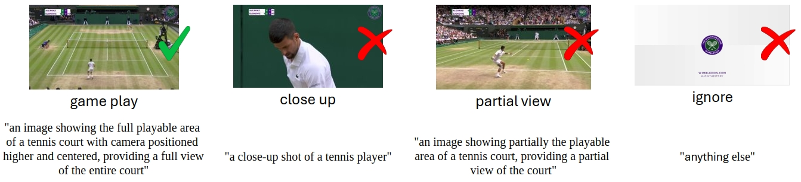
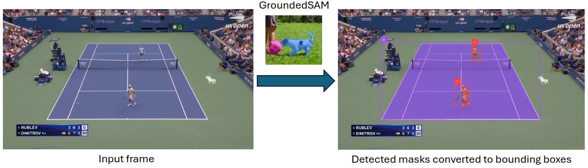
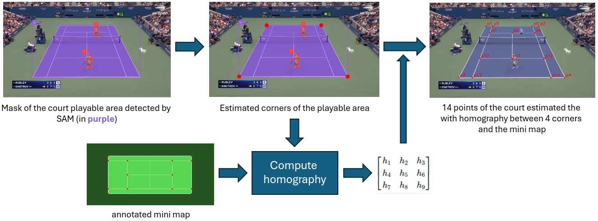
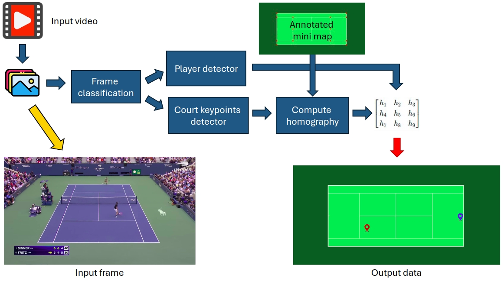
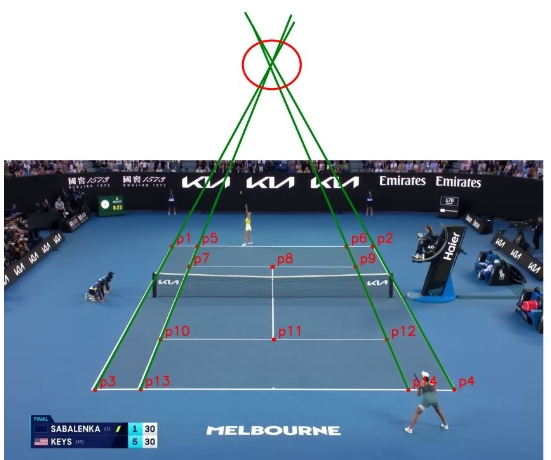

Traditional sports analytics and computer vision models rely on manually annotated datasets, which are expensive and time-consuming to create. Tennis Autodistillation introduces an automated approach to dataset generation by leveraging foundation models—large, general-purpose AI models capable of zero-shot learning and understanding. This project employs ChatGPT Vision (GPT-4V) and Grounded SAM to automatically classify frames, detect players, and identify court landmarks from raw tennis match footage. These auto-labeled datasets are then used to train lightweight, task-specific models that can efficiently perform player detection and court keypoint estimation in real-time. By using foundation models for initial labeling, we eliminate the need for manual annotation, enabling rapid dataset creation for model training. The Roboflow Autodistill library automates the process of transferring knowledge from powerful but resource-intensive models to smaller, more efficient models, making real-time tennis analysis feasible even on consumer hardware. The final trained models can take a raw video of a tennis match and generate an overhead minimap that tracks player positions, opening doors for automated sports analytics, tactical insights, and AI-powered coaching tools. This method not only applies to tennis but can be extended to other sports, surveillance, and autonomous systems where structured datasets are essential.
A core innovation of this project is automatic dataset generation using foundation models. Instead of labeling images by hand, we employ GPT-4V and Grounded SAM to classify and annotate frames, creating training sets for each sub-task. Below we describe the process of the dataset generation:
We captured YouTube videos of tennis matches played on four different court surfaces — Hard Laykold (video 1, video 2), Red Clay (video 1, video 2), Grass (video 1, video 2), and Hard Plexicushion (video 1, video 2) — to ensure a diverse dataset, allowing our models to learn better from various playing conditions. From these videos, we randomly extracted frames, resulting in a total of 4712 frames.

The extracted frames vary widely, including full-court gameplay, partial views, and close-ups. To ensure a complete view of the court and players, we need to filter out unwanted frames, keeping only those classified as gameplay under all court types to ensure a comprehensive dataset for model training.
We used ChatGPT Vision (GPT-4V) to label frames into the four categories (gameplay, partial view, close-up, ignore). Each frame was processed by GPT-4V using a prompt that defined class categories, and the model assigned the appropriate label accordingly. By leveraging a large vision-language model to classify frames as full-court, partial-court, and other categories, we efficiently labeled thousands of frames in a fraction of the time required for manual annotation. The resulting labeled frames were used to train a lightweight frame classifier that can quickly classify new frames on the fly, as it will be shown in the pipeline section. From the 4712 frames initially extracted, 3075 frames were classified as gameplay, which we used to generate the player detection and court landmark detection datasets.

Training a tennis player detector required bounding-box annotations of players. We obtained these by running Grounded SAM on gameplay frames with the text prompt tennis player. Grounded SAM's zero-shot detector (GroundingDINO) finds players and SAM segments them, yielding precise masks. Each segmentation mask was enclosed within a bounding box. This gave us automatic player annotations for each frame, without any manual drawing 🚀. We compiled these into a dataset of images with player bounding boxes, and trained a YOLO-based player detection model on it. The foundation model (Grounded SAM) knows how to spot tennis players in an image (thanks to its training on broad data), and we will distill that ability into our custom player detector by using the foundation model's outputs as training labels, as we will see later on. The trained detector can then run in real time, even though the original foundation model would be too slow or resource-heavy for live use.

Detecting court line intersections and corners is treated as a keypoint localization problem. The dataset was constructed using a multi-step automated process. First, Grounded SAM was prompted with playable area of a tennis court to obtain the desired court region in each frame. Using the segmentation mask, we leveraged the fact that the detected playable area consistently forms a trapezoidal shape to identify its four outermost corner points. Given these four corners, we leveraged the known template (mini map) of a tennis court with 14 standard keypoints, manually defined in coords_court_map.py. Using the four outer corners as correspondences, we computed a homography matrix and projected the 14 standard court points onto the image plane.This gave us the pixel coordinates of all 14 court landmarks for that frame. By doing this for many frames (from different matches and court types), we created a diverse set of 3075 images with labeled court keypoints. We defined some rules to remove masks that were not correctly segmented by SAM, such as when the court has holes (empty blobs) or when the segmentation was inaccurate. This filtering process was fully automated and resulted in a clean dataset of 600 images with court landmark annotations. These served to train a court landmarks detection model (a small keypoint detection network) that can predict all 14 points given a single frame.

The pipeline shown below depicts the inference pipeline, where a video is split into frames, and each frame is processed sequentially by models previously trained. First, a frame classificationa model categorizes the frame type, ensuring only relevant gameplay frames stay in the pipeline. Then, a player detection model identifies players on the court, followed by a court landmark detection model that estimates key points on the court. Finally, a homography transformation projects the detected player positions onto a minimap representation of the court.

Next you can see a demo video 🎥 output by our pipeline using a random video.
You can produce your own videos using the pretrained models available in the runs/ using the script scripts/run_pipeline.py:
python scripts/run_pipeline.py \
--input_video \
--path_classification_model runs/classify/train/weights/best.pt \
--path_player_detector runs/detect/train/weights/best.pt \
--path_keypoints_detector runs/pose/train/weights/best.pt
--output_folder
While the results are promising, there are several areas for improvement, especially in the landmark annotation process aspect:

This methodology of automatic dataset generation and model training has broad implications in sports analytics and beyond. Some potential applications include:
@misc{Padilla2024TennisAutodistill,
author={Rafael Padilla},
title={Tennis Autodistillation: Dataset Generation and Model Training},
year={2024},
howpublished={\url{https://github.com/rafaelpadilla/tennis_autodistill}},
}